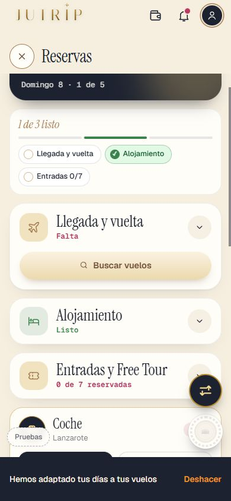
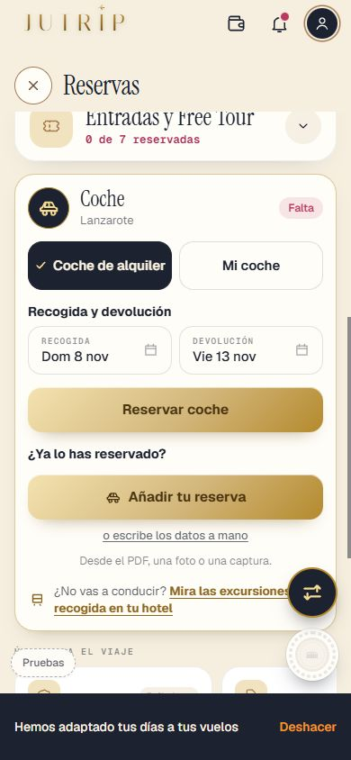
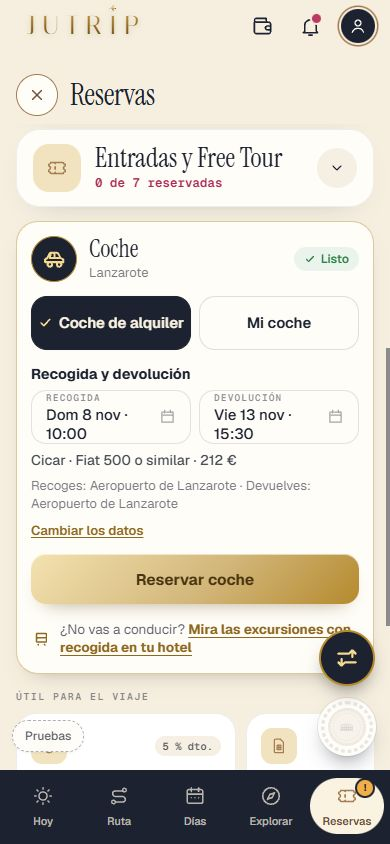
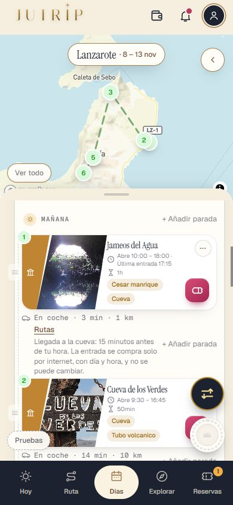
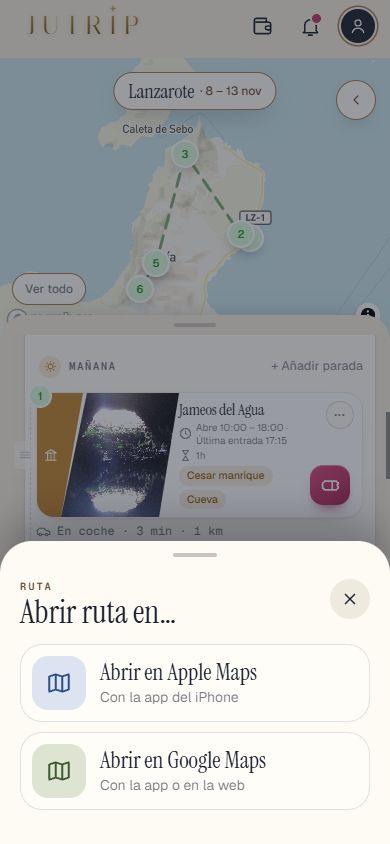

Repaso del arreglo del formulario y de RESERVAS
6-nov. Lanzarote sin Claude, el paso del transporte (el avión, sin «Para moverte»), ACE, el aviso de los 3 días, el coche y el vuelo en RESERVAS, los enlaces de afiliado, «Rutas» en DÍAS y las decisiones de los avisos del viaje.
✅ Hecho — Lanzarote ya no llama a Claude para elegir los lugares: la ruta de tu viaje sale igualComparado parada a parada y comida a comida con docs/dias/_hoy3_ruta_eric.json: 0 días distintos. Sin llamadas de pago en el registro de la API. Dónde: No es de móvil ✅ Hecho — El paso «¿Cómo quieres llegar a Lanzarote?» desde Barcelona: el avión primero, encendido y con su tiempo, a la vista sin hacer scrollTren, Autobús, Ferry y En tu coche en gris con «Sin ruta»; «Desde Barcelona solo tiene sentido llegar en avión.» y «Ir en avión · Continuar». Igual desde Madrid (arreglo_lz_transporte_madrid_1.jpg). Dónde: Formulario › Cómo quieres llegar ✅ Hecho — Fuera la caja «Para moverte» del formularioEl coche de alquiler y la base fija se dan por hechos sin enseñarlos; se cambian en RESERVAS. Dónde: Formulario ✅ Hecho — «ACE» en vez de «LAN» en la pantalla de carga y en los chipscityCode.ts: lanzarote → ACE. Comprobado en la prueba (no sale «LAN» en ningún sitio del formulario). Dónde: Pantalla «Trazando tu ruta…» ✅ Hecho — «Trazando tu ruta…» ya no espera a ClaudeAntes unos 10 s (lo medido por Eric). Ahora el servidor responde la Fase 1 y los 5 días en milisegundos; ver el informe para las cifras. Dónde: Pantalla de carga ✅ Hecho — El aviso «Tu viaje a Lanzarote empieza en 3 días» sale UNA vez, ya con la ruta abierta; nunca encima de la carga ni del formularioLa franja de avisos espera a que la ruta esté abierta y sale entonces, una sola vez. Vale para cualquier aviso que llegue mientras se crea el viaje. Dónde: Al pulsar [Ver mi ruta] ✅ Hecho — RESERVAS › Vuelo sin reservar: botón [Buscar vuelos] (BCN → ACE, 8-13 nov, sin el nombre de la web)Enlace de afiliado con búsqueda profunda: comprobado que acaba en la búsqueda BCN → ACE con las fechas. Dónde: RESERVAS › Llegada y vuelta 
✅ Hecho — RESERVAS › Coche de alquiler sin reserva: [Añadir tu reserva] a la vista, «Desde el PDF, una foto o una captura.», «¿Para quién es?» solo con 2 personas o másCon un solo viajero no sale «¿Para quién es?». Dónde: RESERVAS › Coche de alquiler 
✅ Hecho — RESERVAS › Coche con la reserva puesta: «Listo», compañía · coche · precio, recogida y devoluciónLa hora de recogida cuenta en el día de llegada y la de devolución en el último día (límite de la T1). Dónde: RESERVAS › Coche de alquiler 
✅ Hecho — «Útil para el viaje»: fuera la fila de vuelos y, en Lanzarote, la de alquiler de coche (en Roma se queda)Dónde: RESERVAS › Útil para el viaje ⚠️ A medias / lo miras tú — Enlaces de afiliado (vuelos, seguro, eSIM, coche) en un solo archivosrc/lib/enlacesAfiliado.ts. Los cuatro abren bien. DiscoverCars no tiene enlace profundo con destino y fechas: va a la portada con tu código. Dónde: No es de móvil ✅ Hecho — DÍAS de Lanzarote: el trayecto en coche con «Rutas» (hoja de Roma, Google Maps o Apple Maps, en coche, con el nombre y el pueblo de cada parada) y SIN «+5 min para aparcar»La hoja abierta, en arreglo_coche_dias_rutas_hoja.jpg. Dónde: DÍAS › un día con coche 
✅ Hecho — Avisos del viaje: «¿Cómo vais?» 1 h tras empezar la comida y como tarde a las 18:30Ya era así: sin cambios. Dónde: HOY por la tarde ✅ Hecho — Último aviso del viernes: 16:40, «En media hora tienes que dejar el coche en la T1 (antes de las 17:10).»; fuera el de las 15:17Dónde: Notificación del viernes 13 ✅ Hecho — Fuera la lista roja «X cierra hoy a las…» de HOYDónde: HOY por la mañana ⚠️ A medias / lo miras tú — Los compañeros de un viaje compartido reciben los avisos; cada uno puede apagarlos en AjustesHecho en el servidor. Hay una migración nueva, la 0076, SIN aplicar (solo cambia la mirada barata del planificador): pegar supabase/migrations/0076_avisos_viaje_companeros.sql y comprobar con docs/dias/COMPROBAR_0076.sql. Dónde: Notificaciones Todas las capturas arreglo_coche_bloque_con_reserva arreglo_coche_bloque_sin_reserva arreglo_coche_dias_rutas 
arreglo_coche_dias_rutas_hoja arreglo_coche_vuelo_buscar_vuelos arreglo_lz_transporte_barcelona_1 arreglo_lz_transporte_madrid_1